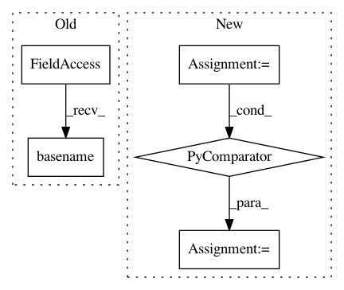

91f0e27b4d7e94e0e5cafe1c2a6fb37c80ab8b41,contrib/go/src/python/pants/contrib/go/tasks/go_workspace_task.py,GoWorkspaceTask,_symlink_local_src,#GoWorkspaceTask#Any#Any#Any#,67
Before Change
src_dir = os.path.join(gopath, "src", go_local_src.address.spec_path)
safe_mkdir(src_dir)
for src in go_local_src.sources_relative_to_buildroot():
src_link = os.path.join(src_dir, os.path.basename(src))
if not os.path.islink(src_link):
os.symlink(os.path.join(get_buildroot(), src), src_link)
required_links.add(src_link)
After Change
Adds the symlinks to the source files to required_links.
source_iter = (os.path.join(get_buildroot(), src)
for src in go_local_src.sources_relative_to_buildroot())
return self._symlink_lib(gopath, go_local_src, source_iter, required_links)
def _symlink_remote_lib(self, gopath, go_remote_lib, required_links):
Creates symlinks from the given gopath to the source files of the given remote lib.
In pattern: SUPERPATTERN
Frequency: 3
Non-data size: 5
Instances
Project Name: pantsbuild/pants
Commit Name: 91f0e27b4d7e94e0e5cafe1c2a6fb37c80ab8b41
Time: 2015-08-19
Author: john.sirois@gmail.com
File Name: contrib/go/src/python/pants/contrib/go/tasks/go_workspace_task.py
Class Name: GoWorkspaceTask
Method Name: _symlink_local_src
Project Name: cesium-ml/cesium
Commit Name: 5b5fb4c657f0cdf4fe404aa9daaf99aca83d01cf
Time: 2016-02-24
Author: brettnaul@gmail.com
File Name: mltsp/tests/test_flask_app.py
Class Name:
Method Name: featurize_setup
Project Name: snipsco/snips-nlu
Commit Name: a05ea9b6422bf13fdff4eed2e1373eb99c2db30d
Time: 2018-05-14
Author: adrien.ball@snips.net
File Name: snips_nlu_dataset/assistant_dataset.py
Class Name: AssistantDataset
Method Name: from_files